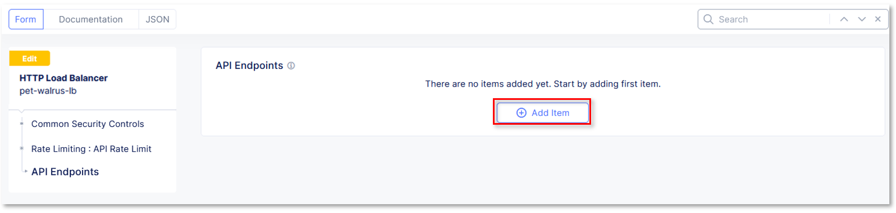

Lab 6: API Discovery & Protection
F5® Distributed API Discovery & Protection provides key security functionality to visualize, understand,
deliver and secure APIs. This lab’s tasks will walk through the configuration steps and note additional
configurations available.
- API Discovery: Provided via machine-based learning processes, enables visualization of the API Framework,
assesses use of end-points, discovers new end-points based on flows, identifies use of sensitive information,
and enables swagger file export.
- API Protection: Encompasses a set of definitions and controls to protect and secure the functions, use and
endpoints of the delivered API’s framework.
Task 1: Swagger File Import & Version Control
In this task’s series of steps you will import swagger files into the F5 Distributed Cloud tenant and explore
version control features.
- In the left top click the F5 ball and navigate to the Web App & API Protection Tile.
|
 |
In the left-hand navigation, click on Files under the Manage section.
Click Add Swagger File in the main window area as shown. Alternatively, the link near
the top of the window can also be used.
|
 |
In the resulting New Swagger File window, input app-api for the Name under
the Metadata section.
In the Upload Swagger File section, click the Upload File button. Select the file
downloaded in Step 1 above and click Open.
|
 |
- Observe that the file app-api-v1.json is present and the click Save and Exit
|
 |
In the resulting Swagger Files window, you will see the upload file with additional
metadata.
Note
You will also see a dialogue box, in the bottom left of your screen indicating the file
has been successfully added.
|
 |
For the next step, use the following link, to download the JSON/OpenAPI spec file
app-api-v2.json to your local desktop or workspace.
- Link::
http://demo-app.amer.myedgedemo.com/lab/app-api-v2.json
Note
This is a modified version (v2) of the JSON/OpenAPI spec file you previously downloaded
|
Returning to the Swagger Files window you were at previously, click the three dots …
in the Action column. In the resulting selection menu, select Update New Version
|
 |
In the Upload Swagger File section, click the Upload File button. Select the file
downloaded in Step 9 above and click Open.
Observe that the file app-api-v1.json is present and the click Save and Exit
|


|
In the resulting Swagger Files window, you will see the upload file with additional
metadata seen previously.
Note now that there are 2 versions available of the app-api file. Click the
2 in the Versions column.
|
 |
- In the resulting window, observe there are now two versions of the app-api spec file.
Note
This is an API File update process which can also be performed through the F5
*Distributed Cloud API framework.
- Click X in the top-right corner and proceed to the next task.
|
 |
Task 2: Swagger Definition
In this task’s series of steps you will establish the Swagger Definition which serves as an object
pointer to imported swagger files you just uploaded.
In the left-hand navigation of the Web App & API Protection service, click on API
Management under the Manage section and then click API Definition.
|
 |
In the resulting API Definition window, click Add API Definition in the main
window area as shown.
|
 |
In the resulting New API Definition window, input app-api-spec for the Name
under the Metadata section.
In the Swagger Specs section, click the Arrow in the Select Item box in the
Swagger Specs column.
Select the version 2 of the previously uploaded swagger spec file. It will be in the
format <namespace>/app-api/v2-<current-date>.
Once selected, click Save and Exit in the bottom-right corner.
|
 |
Task 3: Attaching API Discovery & Protection to Load Balancer Object
In this task’s series of steps you will enable the API Discovery & Protection feature on the
previously built Load Balancer object delivering the targeted application/API.
In the left-hand navigation of the Web App & API Protection service, click on Load
Balancers under the Manage section.
|
 |
In the resulting Load Balancers window, click on the three dots … in the
Action column, and the select Manage Configuration.
|
 |
- Click Edit Configuration in the top-right corner.
|
 |
Click API Protection in the left-hand navigation.
In the API Protection section, click the drop-down arrow next to API Definition
and select Enable.
|
 |
- In the updated Use API Definition section, click the drop-down arrow and select the
- previously created API Definition <namespace>/app-api-spec.
|
 |
In the API Protection section, click the drop-down arrow next to API Discovery
and select Enable.
|
 |
In the updated API Discovery section, click the drop-down arrow next to Learn
from Traffic with Redirect Response and then select Enable Learning from Redirect
Traffic*.
|
 |
- In the API Protection Rules section, click the Configure link.
|
 |
In the resulting API Protection Rules window, click Configure in the API
Endpoints section.
|
 |
- Click Add Item in the API Endpoints window.
|
 |
In the resulting window, input block-endpoint in the Name field of the
Metadata section.
In the Action area, click the drop-down arrow indicated and select Deny.
|
 |
- In the API Endpoint section, click on the API Endpoint input field as indicated.
- Select the See Suggestions link.
|
 |
- Select /v2/user from the available options provided.
Note
The endpoints available are provided via the spec you previously imported and defined
- In the HTTP Methods area, click in the Method List input field.
|
 |
- Select Any from the available methods provided.
Note
Multiple methods can be selected if needed
|
 |
- Review the configuration and click, the Apply button.
|
 |
- Review the API Endpoint deny rule and click, the Apply button.
|
 |
Note that API Protection Rules are configure for the API Endpoints and click, the
Apply button.
|
 |
Task 4: Attach API Rate Limiting to Load Balancer Object
In this task’s series of steps you will enable the API Rate Limiting feature on the
previously built Load Balancer object delivering the targeted application/API.
- Using the left-hand navigation, click the Common Security Controls link.
|
 |
Locate the Rate Limiting area of the Common Security Controls and use the
drop-down to select API Rate Limit.
|


|
In the expanded menu under Rate Limiting, click Configure in the API
Endpoints area.
|
 |
- In the resulting window API Endpoints window, click Add Item.
|
|  |
In the resulting configuration window, select /v2/store/order/{orderId} for API
Endpoint input.
Select ANY for Method input and then click the Apply button.
|
 |
- Review the API Endpoint rate limiting rule and click, the Apply button.
|
 |
Note the updated configuration for API Rate limiting, Click Other Settings in the
the left-hand navigation.
|
 |
- Once at the bottom of the HTTP Load Balancer configuration and click the Apply button.
|
 |
This configuration highlights the elements needed to deploy API Discovery & Protection. This
configuration can also be fully deployed and managed via the F5 Distributed Cloud API.
|
End of Lab 6: This concludes Lab 6.
A Q&A session will begin shortly after conclusion of the overall lab.
|
 |
{kind=link}